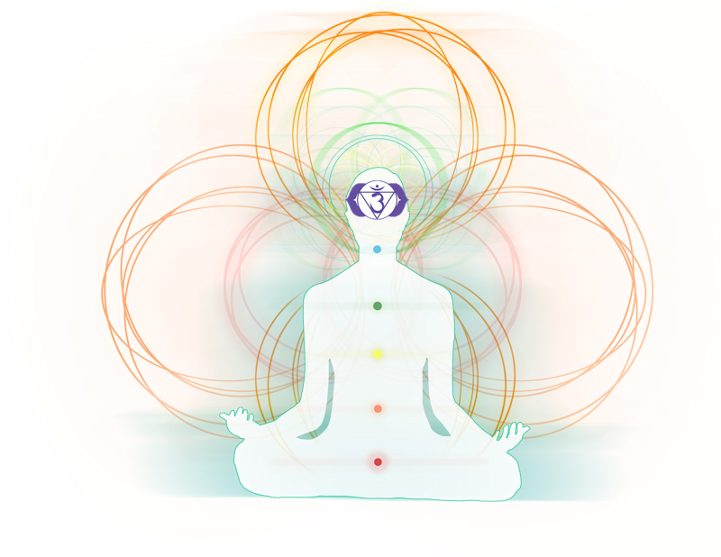

Welcome to Nadiya's page about Chakras

7 Main Chakras
Root
position: base of the spine
color: red
Your root chakra is associated with your means of living: survival, safety, physicality.
Its energy is based on the earth element. It’s associated with the feeling of safety and grounding. It’s at the base of the chakra system and lays the foundation for expansion in your life.
Sacral
position: just below the navel
color: organge
Your sacral chakra associates with your creativity and imagination. Its element is water and as such, its energy is characterized by flow and flexibility. The function of the sacral chakra is directed by the principle of experiencing pleasure.
Solar Plexus

position: stomach
color: yellow
Your Solar Plexus chakra associates with your means of independence.
Your sacral chakra associates with your creativity and imagination. Its element is fire and its characterized by the expression of will, personal power, and mental abilities.
Heart

position: center of chest- heart
color: green
Your Heart chakra associates with your relationships, not just romantic, but all personal ones, including with yourself. Related to the element of air, heart heavily associates with abilities to feel strong emotions of compassion, empathy, grief, forgiveness, love, and simply feeling.
When the heart chakra is open, you may feel being deeply connected, the harmonious exchange of energy with all that is around you, and the appreciation of beauty.
Throat
position: base of throat
color: blue
Your throat chakra associates with your means of exppression and communication.The Throat chakra is about the expression of yourself: Your truth, purpose in life, creativity.
This chakra has a natural connection with the second chakra or sacral chakra, center of emotions and creativity as well. The throat chakra’s emphasis is on expressing and projecting the creativity into the world according to its perfect form or authenticity.
Third Eye

position: forehead, above between the eyese
color: indigo
Your Third Eye chakra relates to your intuition and connection to insight. This chakra is related to the “supreme element”, which is the combination of all the elements in their pure form.
Your Third Eye chakra also relates to your intuition and connection to insight. This chakra is related to the “supreme element”, which is the combination of all the elements in their pure form.
Crown
position: top of head
color: violet
Your Crown chakra relates to your conscioussness/awareness of higher conscioussness and many related states.
The crown chakra is associated with the transcendence of our limitations, whether they are personal or bound to space and time.
The quality of awareness that comes with the crown chakra is universal, transcendent.
What are Chakras?
The term chakra is Sanskrit for “wheel.” Chakras are depicted as spinning, colored wheels of energy. For millenia, chakras have been recognized as essential to life.
Chakras, by definition, are energy centers within the human body that help to regulate all its processes, from organ function to to the immune system and emotions. Seven chakras are positioned throughout your body, from the base of your spine to the crown of your head. Each chakra has its own associated color and aligns with specific functions in your body that help make you human.
It is said that we can have up to 80,0000 chakras positioned in our bodies but we only commonly count the main 7. In various traditions chakras are associated with multiple physiological functions. They are visualized as lotuses with a different number of petals in every chakra.
The History
Discussions about chakras originate in India around 1,500 B.C. and there is also mention of them in early Yoga scriptures, dating to circa 200 B.C. However, the West didn’t hear much about chakras until the subject was introduced in the early 20th century.
The main text about chakras that has come to us in the West is a translation in The Serpent Power published in 1919. These texts: the Sat-Cakra-Nirupana, written by an Indian pundit in 1577, and the Padaka-Pancaka, written in the 10th century, contain descriptions of the energetic centers and related practices. The New Age movement has led to an increased interest in the West regarding chakras. Many in this movement point to a correspondence between the position and role of the chakras and those of the glands in the endocrine system.
The seven chakras are said by some to reflect how the unified consciousness of humanity (the immortal human being or the soul), is divided to manage different aspects of earthly life (body/instinct/vital energy/deeper emotions/communication/having an overview of life/contact to God). The chakras are placed at differing levels of spiritual subtlety, with Sahasrara at the top being concerned with pure consciousness, and Muladhara at the bottom being concerned with matter, which is seen simply as crude consciousness.
Are your Chakras balanced?
If you ever felt "off" on the inside and didn't know what was going on, it's possible your chakras could've been off balance.Traumas, fears and ‘negative’ experiences can lead to long-term imbalances in your energy system that then manifest into challenges like insecurity, anger, stress or disease leaving us with unbalanced chakras. Chakra balancing is the process of restoring a harmonious flow of energy across the chakra system. One could balance their chakras with many various techniques. Some common ones you may already know about are yoga and meditation. There are forms of yoga and meditation specifically dedicated to balancing the chakras. While each chakra can be balanced once at a time, you can also do them all together. The point is to bring an equilibrium to mind and body
Reiki is a common Chakra healing method. You may have seen some examples in movies. Reiki is a spiritual practice originating from Japan that uses hands-on energy healing to support a person’s self-healing and balance. They relate to energy and how it functions in the human body. Reiki healing is a whole body healing approach that relies on the transmission of energy through the hands into the person who is the recipient. This technique restores energy balance and vitality by relieving the physical and emotional effects of unreleased stress.

Pranayama is a special breathing practice also said to aid in the balancing of chakras. As you breathe, your chakras are cleansed. You’ll be directing your breath in and out of the body, at a controlled and increased rate, which should leave you in a high, trance like state as breathing is a natural relaxant for humans

Pratyahara is the withdrawing of the mind and senses from the objects of the senses. There are various ways to remove the distraction of the senses, such as remaining still, closing the eyes, and sitting in a quiet place or using earplugs. It is the block of the outside and internalization of the life-force that results in the balancing of the inner chakras.
 With right intent, anything can your chakras back to balance. Being in nature, danicing, or even eating certain colored foods corresponding with the chakra you're trying to heal is said to help as well. Clearly, you can't just simply do these things without good and focused intent on healing. Chakras are very energetic and therefore, respond with pure and good energy.
With right intent, anything can your chakras back to balance. Being in nature, danicing, or even eating certain colored foods corresponding with the chakra you're trying to heal is said to help as well. Clearly, you can't just simply do these things without good and focused intent on healing. Chakras are very energetic and therefore, respond with pure and good energy.